Sobre este trasfondo cabe ahora discernir el real punto crítico de la poesía y con ello, también, de la lengua misma. Es decir, el sentido del poema. Precisemos diciendo que todo mensaje (que implica comunicación e información entre emisor-receptor) lleva consigo una significación –conocida o desconocida–. No cabe, pues, confundir la significación con el sentido. La pregunta por el sentido debe situarse a partir del hecho mismo que la combinación e invención de unidades discretas, cuyo objetivo es perfilar un mensaje, se cumplen, precisamente, con unidades discretas y no de otro modo. ¿Qué sentido tiene que ello ocurra así? ¿No envuelve esta pregunta –a su vez– la pregunta misma por el sentido de la lengua como tal? Por cierto que cualquier respuesta que se obtenga desde fuera del ámbito propio de la lengua considerada como “corpus” no es respuesta, pues nos remitiría, sin término, de un campo a otro según las múltiples disciplinas en que nos fuéramos apoyando.
Para acercarnos a una respuesta posible vamos a partir del reconocimiento de una de las formas más curiosas de la poesía. Curiosa por su vigencia en múltiples lenguas, más allá de en la que fue inventada y por su persistencia a lo largo del tiempo y de épocas diferentes. Nos referimos al soneto que, a su vez, es un buen modelo de usos e invenciones de unidades discretas a todos los niveles.
“Sonn-moi ces beaux sonnets, non moins docte et plaisante invention italienne”, señala J. du Bellay en su “Defense et illustration de la langue française”. El soneto surgió de aquel verdadero molino que elaboró entre otras cosas el concepto mismo de estado moderno y que fue la corte siciliana de Federico II. Se acuñó, allí, en lengua italiana hasta el esplendor que le confirieron los poetas stilnovistas. El soneto, derivado de la sonatina (palabra, danza y música) se ciñe a números precisos, tanto en sílabas, acentos, rimas y versos. A partir de la rima puede descubrírsele ya una particularidad. Los números –su métrica–, la coordinación sonora del verso por aliteraciones, matices y contrastes cristalizan en la rima por cuya resonancia, la masa sonora del poema se articula y unifica. De esa suerte viene a primer plano la cadencia íntima de la composición para darnos como una cierta cuasi inmovilidad sonora (redundancia mayor) que apenas transcurre con leves cambios desplegando, justamente con un significado único, su polisemia. Pocas indicaciones tan precisas al respecto como la que Frugoni da en su “Cane di Diogene”: “Il sonetto ha de essere sostenuto, unito, conseguente, conchiusivo, arguto... ch’abbia un giro solo ed un solo assunto; ma sopra tutto, a guisa dell’ape che versa il mele nell’alveare, poi lo sugella col pingolo che nella cera vergine imprime”. Tal coacción es la garantía del uso e invención de unidades discretas a todos los niveles con fines significativos. Por otra parte, el soneto recogió en su forma no sólo la lengua que le dio origen pero, además de las lenguas de origen latino, también las germano-sajonas, las eslavas, algunas orientales, el griego moderno, etc., y parece ser aún apto para las más. Este hecho dista mucho de poder ser explicado mediante la obsoleta distinción entre fondo y forma que es ya insuficiente para enfrentar el análisis poético. Por el contrario, la “forma” dista mucho de ser como un recipiente para líquidos cualesquiera, más bien ella se sostiene en acorde con aquello que la requiere así y desde sí mismo. La comprensión del soneto que cruza, desde su aparición primera, todas las épocas históricas y los distintos momentos abriéndose a una variedad de significados inigualada por otra forma, nos permitirá aproximarnos a reconocer lo que pretendemos indicar como sentido.
La excelencia del soneto radicaría, pues, en que es una estructura que admite la multiplicación de unidades discretas a todos los niveles de la lengua; constituyéndose él mismo, por definición, en otra unidad discreta para, precisamente, presentarse como lo no discreto, como un máximo de homogeneidad o continuidad. De suerte que esta máxima continuidad, lograda por multiplicación de discreciones, expanda la mayor riqueza significativa posible.
Observemos que ya las letras, como tales, son unidades discretas en cuanto para serlo exigen una inconfundible distinción a fin de combinarse según ésta y no otra selección –selección que indica tal lengua y no aquélla–. Así ocurre también y fundamentalmente con los fonemas –unidad discreta radical de la lingüística–. Pero, además, las condiciones métricas, periodicidades de acentos, modalidades de rimas, cantidad precisa de versos y el inicio y cierre justo de la composición –preestablecidos– indican el soneto como un verdadero “corpus” en el que las unidades discretas alcanzan una multiplicación sorprendente con fines semánticos. Hay que agregar, a todo ello, la polisemia explícita y la implícita que todo soneto lleva consigo y que permite nuevas comprensiones coherentes a lo largo de años y siglos. Pero la nota que subrayamos para los fines que pretendemos –ceñir el sentido– es la siguiente: El soneto mediante un fuerte conjunto de unidades discretas se articula presentándose como sostenida continuidad.
Aquello que se nos presenta en el soneto delata su fundamento. Decimos que la tendencia manifiesta a la continuidad –que cubre desde la linealidad de la secuencia hablada o escrita hasta la metáfora como lazo entre distantes o dispares– lograda por articulaciones de múltiples unidades discretas a todos los niveles de la lengua, es cabalmente el sentido del soneto (el sentido no es, pero incluye la significación). Así considerado y reconocido el sentido sería una suerte de apertura fundamental –más que una dirección– con que la lengua se muestra como tal, es decir, se muestra en su primigenio sentido. Para el caso, un sentido: la continuidad.
El ejemplo de soneto –útil para este análisis– se puede extender a toda poesía. Y ésta, por su reconocida particularidad, que es, desde el mismo punto de vista de la lingüística, la mayor densidad semántica posible de toda lengua, nos autoriza a no considerarla como un “casi lenguaje” a la manera de Ransom, sino como la expresión o cristal mismo de la lengua. El “lugar” donde la lengua se expone de suyo y por sí como ella es.
Desde el punto cuasi cero que señala Pierce respecto del mensaje: “El crecimiento de la tasa de información contenido en el mensaje va, de par con el crecimiento del “ruido”, un simple rumor incomprensible, que corresponde a la página blanca, representa el mensaje con máximo de entropía” hasta el riquísimo despliegue de la continuidad en sus múltiples variables significativas, obtenida por la conjunción de múltiples unidades discretas a todos los niveles, se desarrollan las lenguas, al menos las occidentales. Una afirmación semejante parece aventurada pero tiene, por cierto, fundamento, si se recuerda la propia observación de Jakobson cuando advierte que “el lenguaje poético revela la existencia de dos elementos que actúan en la buena disposición fónica: la elección y la constelación de los fonemas y de sus componentes; el poder evocador de esos dos factores que aunque permanezca oculto, existe sin embargo de manera implícita en nuestro comportamiento verbal habitual”. Podría caracterizarse dicha tendencia a la continuidad –en términos generales– como, hasta hoy, el sentido de nuestras lenguas. Cabe señalar aquí que el trabajo de la poesía moderna puede ser entendido también con ese sentido, en el que se inscribe el propio Joyce.
Los elementos irreductibles de toda lengua son las unidades discretas con que ella se constituye como tal. La articulación de dichas unidades que conforman una lengua tiene dos alternativas. Tender hacia la manifestación de la continuidad, hacerla aflorar, exponerla. Y en semejante movimiento y articulación decidir el mensaje significativo –comunicación e información–. La continuidad, pues, supone la articulación compleja de unidades discretas. O bien, la lengua puede con el supuesto de la continuidad tender, moverse, articularse a fin de exponer, poner de manifiesto la discreción misma, y entonces su sentido sería, ya no la continuidad, sino lo discreto mismo.
Por cierto, la continuidad no se alcanza por la mera voluntad de conjugación de tales o cuales unidades discretas y reglas ordenadas para fines semánticos. Del mismo modo, tampoco se puede hacer aflorar lo discreto mismo mediante el juego de tales o cuales rupturas y desarticulaciones manifiestas. Cabe preguntarse, pues, de dónde proceden tales alternativas y cómo se deciden. Pero antes conviene anotar que la continuidad, tal como se ha visto en el caso del soneto, requiere un real cálculo, una incesante “invención” de unidades discretas a diversos niveles. Así, la otra alternativa requiere a su vez un cálculo que permita la suposición de la continuidad desde la que aflore, para manifestarse, el sentido de lo discreto mismo.
Sirva como indicación, al paso, para señalar este punto, el hecho de que en la historia de la poesía occidental la manifestación cabal de lo discreto, como tal, comparece sólo en ciertos poemas de Góngora y, contrariamente a lo que habitualmente se supone, no en Mallarmé y sí, en cambio, en el preciso poema de Rimbaud “Devotion”. Todo el trabajo de la poesía moderna, como ya se dijo, tiende a manifestar la continuidad. Otro ejemplo, se registra en algunas composiciones de Anton Webern cuyo cálculo de la continuidad –la serie– le permite manifestar la discreción misma, como tal, a un grado nunca previsto en música, contrariamente, por ejemplo, a las composiciones de la música aleatoria en las que la irrupción de disparidades tiende a manifestar, precisamente, la continuidad.
Para disipar cualquier clase de duda a este respecto, recordemos aquí dos indicaciones, elegidas al azar, por demás significativas. Raymond Roussel, uno de los autores peculiares de nuestro tiempo, tras exponer ciertos procedimientos con los que escribía sus libros concluye advirtiendo “Este procedimiento, en suma, es pariente de la rima. En ambos casos hay una creación imprevista debida a combinaciones fónicas. Es, esencialmente, un procedimiento poético. Por cierto, resta aún saberlo emplear. Y así como con las rimas se pueden hacer buenos o malos versos, se puede, con este procedimiento, hacer buenas o malas obras”. Y para indicar que se extravía quien pretenda por esas vías substituir el fondo originario de la poesía y de la lengua, siempre es clara y simple la advertencia de Georg C. Lichtenberg que afirma la “arbitrariedad” profunda de esa verdad: “Los versos, como las ostras, no resultan bien sino en los meses sin r”.
Pero ya que nos hemos preguntado por la procedencia del sentido, cabe aproximarnos a una zona de respuestas posibles. Digamos que esa tendencia fundamental que se manifiesta en la lengua –hacia la continuidad o hacia la discreción en tanto la una supone siempre la otra–, es el modo mismo como la lengua se presenta; su manera, es decir, la manera cómo ella se constituye en apertura donde todo mensaje es posible (dentro del marco de la lengua). Tales aperturas o apertura es el fondo mismo de la lengua. Por eso es impensable una lengua sin sentido. Esto implica, a su vez, que la aparición o desaparición de una lengua vistas desde su propia interioridad se indica por la apertura y desvanecimiento de tal o cual sentido. Fondo y zona, de suyo, ambiguos. Aquí ya no es suficiente el rigor conocido para describir las funciones de una lengua sino que requiere otro. La poesía, desde siempre, llevó y lleva consigo ese fondo y esa zona. Dicho de otro modo, trata, directa o indirectamente, como materia propia con la aparición y desaparición –apertura y desvanecimientos– de una lengua. Por eso ella es buena fuente para enfrentar el fenómeno. Fenómeno que no en vano Heidegger reconoce diciendo “la lengua es la casa del ser”.
A partir de tal fondo, siguiendo su movimiento, el ritmo, fuimos a dar con una cierta apertura en la que calculando la continuidad se manifiesta lo discreto mismo. Tales son los poemas “X 2” y “La Guerra Santa”. Siempre, en el fondo de toda poesía, el ritmo se hace presente como sentido. Por ello Pound anotó un día, con clarividencia, que un poeta es quién puede “darnos un ritmo”, pues ello supone, nada menos pero nada más, la propia apertura que la lengua es. Y en semejante apertura, como manera de ser, se articulan los “mensajes”. Tal realidad de la lengua fue poéticamente dicha por Dante anotando su irrupción y sus tonos, es decir el modo mismo del ritmo que la constituye en la lengua y, de paso, acabando con la “imagen” de una lengua originaria dividida y bastardizada a causa de la soberbia humana y de la división del trabajo, indicadas como torres de Babel. Dante dice allí –y poéticamente– que cada lengua es una apertura real o sentido y que tal sentido manifiesta el ritmo que es la lengua en cuanto resplandeciente, la manera cómo embellece aquello que va con ella: el idioma. Pero ya no corresponde tratar de tales consideraciones en este prólogo. Sin embargo, bien puede servir como fin de estas notas preliminares y, a su vez, como iniciación de los trabajos que componen la presente publicación ese texto dantesco. El primer hombre, el primer hablante, Adán, le dice a Dante el secreto de la lengua –sus apariciones y desapariciones–, su ritmo propio.